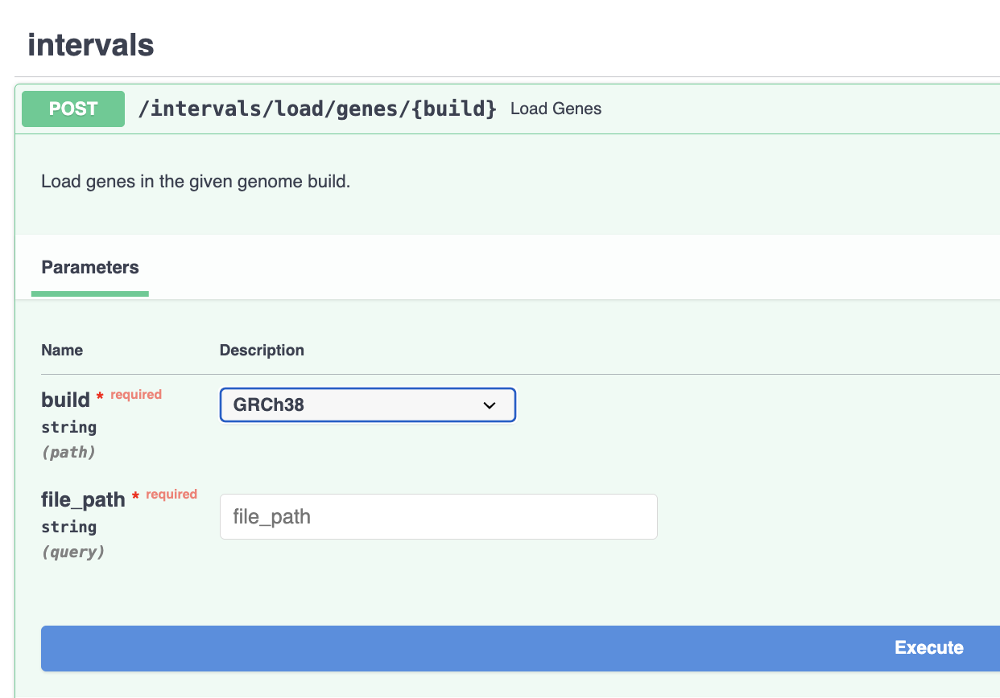
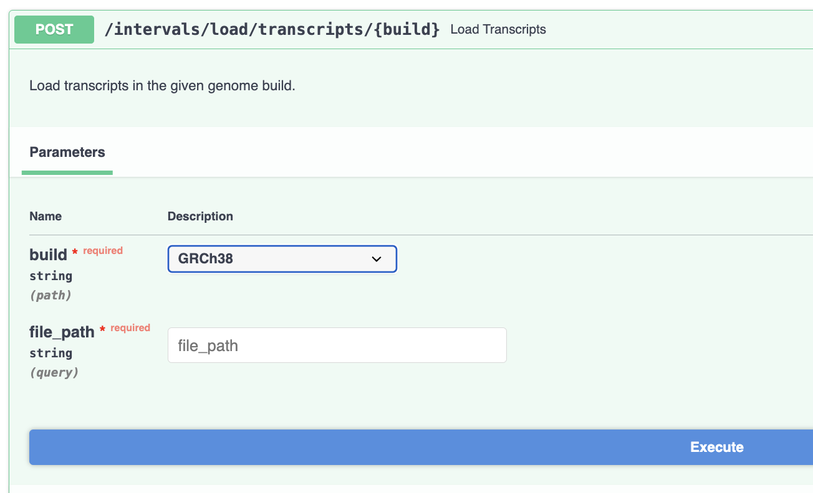
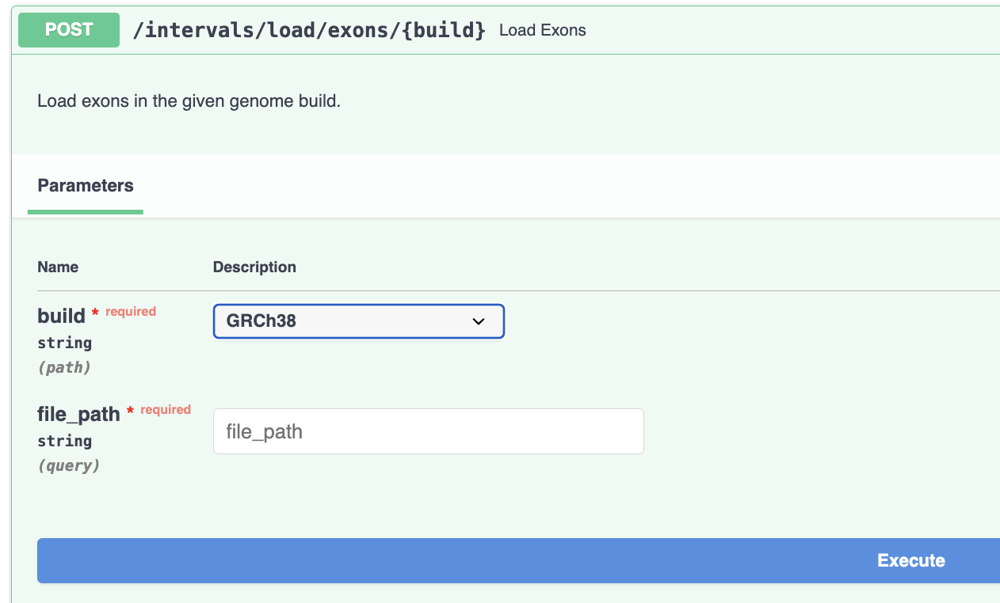

Loading genetic intervals: genes, transcripts and exons into the database
Genes, transcripts and exons should be loaded and updated at regular intervals of time. Depending on the type of sequencing data analysed using chanjo2, loading of transcripts and exons might not be required. For instance, gene coordinates should be enough for whole genome sequencing (WGS) experiments, while transcripts and exons data are necessary to return statistics from transcripts and exons-based experiments.
Genes, transcripts and exons should pre pre-downloaded from the Ensembl Biomart using the Schug library and loaded into the database in three distinct tables.
Genes should be loaded into the database before transcripts and exons intervals.
Downloading Resources from the Schug Instance at SciLifeLab
Downloading Genes
curl -X 'GET' 'https://schug.scilifelab.se/genes/ensembl_genes/?build=38' > genes_GRCh38.txt
Downloading Transcripts
curl -X 'GET' 'https://schug.scilifelab.se/transcripts/ensembl_transcripts/?build=38' > transcripts_GRCh38.txt
Downloading Exons
curl -X 'GET' 'https://schug.scilifelab.se/exons/ensembl_exons/?build=38' > exons_GRCh38.txt
To download genes, transcripts, and exons for genome build 37 (GRCh37), simply replace "38" with "37" in the commands above.
Note: Biomart downloads may occasionally time out, resulting in incomplete files. To ensure the integrity of your downloaded data, always check that the last lines of the file contain data for the MT chromosome, as it is the final chromosome retrieved from Biomart.
Loading/Updating Genes in the Database
FastAPI provides a user-friendly Swagger UI that simplifies various tasks, including loading genes, transcripts, and exons into the database.
If you have a local instance of Chanjo2 running, and Swagger UI is accessible in your browser at http://localhost:8000/docs, you can load genes for a specific genome build using the /intervals/load/genes/{<genome-build>} endpoint:

The required parameters are:
- Genome build (e.g., 37 or 38)
- file_path: The path to the genes resource file on your system
The expected server response is:
"Genes will be updated in the background. Please check their availability in a few minutes."
Important:
Loading genes into the database will overwrite any existing transcripts and exons associated with the same genome build. This ensures that the transcript and exon intervals remain consistent with the newly loaded gene definitions.
Loading/Updating Transcripts
Similarly, transcript data can be updated using the /intervals/load/transcripts/{<genome-build>} endpoint:

Loading/Updating Exons
Exon data can be loaded in the same way by providing the genome build and the path to the resource file using the /intervals/load/exons/{<genome-build>} endpoint.

Genes, transcripts and exons queries
Once the database is populated with genomic intervals data, it is possible to run queries to retrieve its content.
Genomic intervals can be queried using genes definitions. Genes can be provided as a parameter to the query in the following formats
- Ensembl gene IDs (use parameter
ensembl_ids) - HGNC ids (use parameter
hgnc_ids) - HGNC symbols (use parameter
hgnc_symbols)
Genome build is always a required parameter in these queries.
Examples:
- Send a POST request to Retrieve information on a list of genes using HGNC symbols:
{
"build": "GRCh37",
"hgnc_symbols": ["LAMA1","LAMA2"]
}
- Retrieve transcripts available for one of more genes described by Ensembl IDs:
curl -X 'POST' \
'http://localhost:8000/intervals/transcripts' \
-H 'accept: application/json' \
-H 'Content-Type: application/json' \
-d '{
"build": "GRCh37",
"ensembl_gene_ids": [
"ENSG00000101680", "ENSG00000196569"
]
}'
- Retrieve all exons for genes with HGNC IDs: 6481 and 6482:
curl -X 'POST' \
'http://localhost:8000/intervals/exons' \
-H 'accept: application/json' \
-H 'Content-Type: application/json' \
-d '{
"build": "GRCh37",
"hgnc_ids": [
6481, 6482
]
}'
Whenever ensembl_ids, hgnc_ids, hgnc_symbols parameter is not provided, these endpoints will return a list of 100 default genes, transcripts or exons. To increase the number of returned entries you can specify a custom value for the query limit parameter.